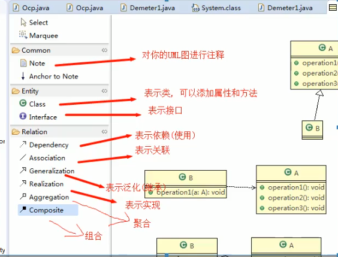

1、UML：统一建模语言，是一种用于软件系统分析和设计的语言工具，它用于帮助开发人员进行思考和记录思路的结果。
2、UML本身是一套符号规定，这些符号用于描述软件模型中的各个元素之间的关系，比如，类、接口、实现、泛化、依赖、组合、聚合等。

3、使用UML来建模，常用的工具的有Rational Rose,也可以使用一些插件来建模。
4、UML图
画UML图与写文章一样，把自己的思想描述给别人看，关键在于思路与条理。
UML图分类：
- 用例图
- 静态结构图：类图、对象图、包图、组件图、部署图
- 状态行为图：交互图（时序图、协作图）、状态图、活动图
5、类图
- 主要用于描述系统中类本身的组成和类之间的各种静态关系。
- 类之间的关系：依赖、泛化（继承）、实现、关联、聚合、组合。


依赖关系：只要是在类中用到了对方，那么他们之间就存在依赖关系。如果没有对方，连编译都通不过。


泛化关系：实际上是继承关系，他是依赖关系的特例。


实现关系：实际上A类实现B接口，依赖关系的特例；


关联关系：实际上是类与类之间的联系，是依赖关系的特例。
关联关系具有导航性：即双向关系或单向关系；
关系具有多重性：如“1”表示有且仅有一个，“0...”表示0个或者多个，“0，1”表示0个或者1个，“n...m”表示n到m个都可以，“m...”表示至少m个。

聚合关系：表示的是整体和部分的关系，整体和部分可以分开。聚合关系是关联关系的特例，所以具有关联的导航性和多重性。


组合关系：